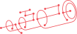

Centro Operacional de Excelência
Visibilidade das operações, eficiência operacional e suporte à tomada de decisão.
Este material consolida os resultados do estudo do COE: diagnóstico da operação, indicadores, infraestrutura e arquitetura de dados, viabilidade, governança e roadmap, com piloto na Unidade Avaré.
Oito capítulos, do objetivo ao estudo de viabilidade
-

Objetivos01 O que a Holambra espera do COE, a partir de 12 entrevistas e da visita a Avaré. - Desafios02 As dores relatadas pelas áreas, a infraestrutura atual em 3D e as fichas das automações e dos sistemas.
- Indicadores03 Telas do videowall e câmeras, modelo 3D de Avaré, indicadores por sistema e a ficha de cada KPI.
- Sala do COE04 A sala do COE no prédio atual, em 3D, com as telas do videowall e o zoneamento.
- Roadmap05 O passo a passo ano a ano até o COE, o plano de 2027 a 2029, a contratação da integradora e a expansão às sete unidades.
- Governança06 Quem decide o quê: níveis, rituais, papéis e áreas envolvidas.
- Estudo de Viabilidade07 O investimento do COE: infraestrutura, implementação e valores ano a ano.